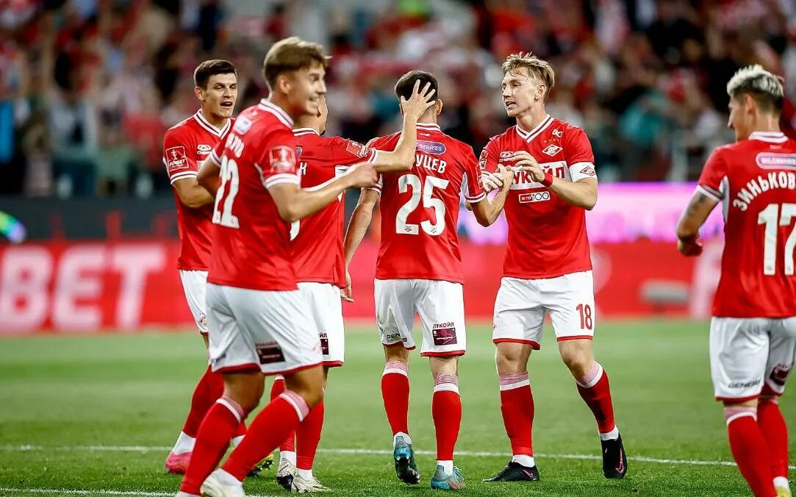

Футбольный клуб "Спартак" (Москва) — один из самых титулованных и популярных клубов России. Основан в 1922 году. "Спартак" является рекордсменом по количеству выигранных чемпионатов СССР (12 раз) и России (10 раз). Команда также обладает множеством других трофеев, включая Кубок СССР и Кубок России.
Домашние матчи команда проводит на стадионе "Открытие Банк Арена". Болельщики клуба известны своей преданностью и страстью к футболу.
